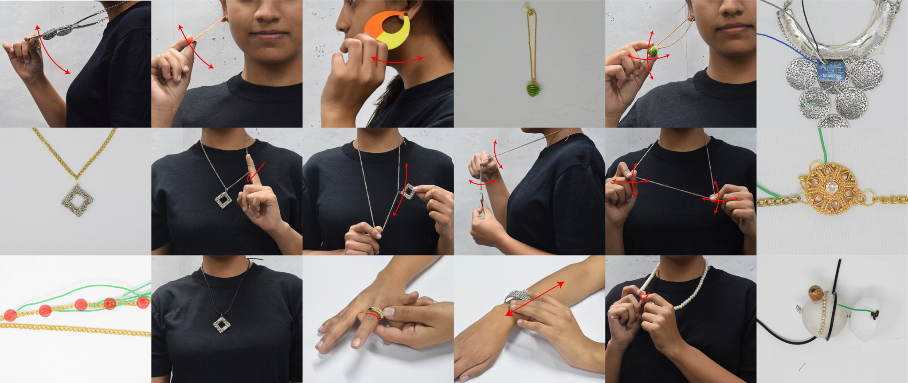
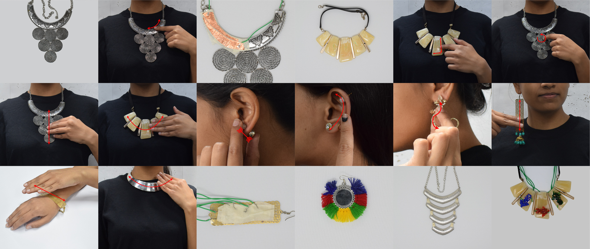

Aryan Saini, Kartik Mathur, Nirmita Mehra, et al.
Gehna or jewelry weaves into our everyday life like no other wearable does. In this work, we explore jewelry to enable wearable-based input. We used a Research through Design (RtD) method to combine perspectives from the fields of jewelry design, input techniques, and wearable computing, along with our hands-on study of a sample set of ornaments to formulate the design space of jewelry-enabled input. We prototyped our input techniques through suitable sensing methods, implemented a set of applications to demonstrate the versatility of the platform. This work was (conditionally) accepted at CHI 2019. Camera ready version can be found here.
 